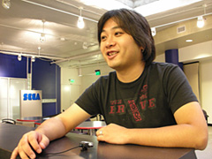
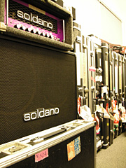

「クリエイターズ インタビュー」 第7回目は、
『ソニックアドベンチャー』シリーズ、『ソニックヒーローズ』、『シャドウ・ザ・ヘッジホッグ』の
サウンドディレクターを担当した瀬上 純を紹介！
プロフィール：
瀬上 純（せのうえ じゅん）
セガ/クリエイティブセンターサウンドセクション/スタジオUSA在勤
『ソニックアドベンチャー』シリーズ、『ソニックヒーローズ』『シャドウ・ザ・ヘッジホッグ』サウンドディレクター
近年のその他の参加作には、『セガラリー2006』『プロ野球チームをつくろう！3』など。
「クリエイターズインタビュー アンケート」で、「インタビューを希望する人」の項目で
9月中旬までにいただいた中で一番多かったのが「瀬上純さん」でした。
そこで、今回のクリエイターズインタビューは『ソニックアドベンチャー』シリーズ、
『ソニックヒーローズ』、『シャドウ・ザ・ヘッジホッグ』のサウンドディレクターを担当した
瀬上純さんにお話しを伺いたいと思います。
どうぞよろしくお願いいたします！
はい、こちらこそよろしくお願いします。
ＵＳＡ通信ではいつもお世話になっております。
今回はインタビューコーナーにも登場してもらうことになりました。
アンケート結果を見て、瀬上さんはいかが思われましたか？
単純に嬉しいですよね、やっぱり。（笑）
まず、瀬上さんの経歴からお伺いしたいと思います。
瀬上さんの音楽との出会いは？
音楽の勉強などは、いつからどんな風に始められたのでしょうか？
うちは、両親とも趣味で音楽をやっていたんですよ。
だからエレクトーンや、クラッシックギター、
ウクレレなんかがありましたね。
それに、母がFMラジオ関係の仕事をしていた関係で、
家にはとにかくいっぱいのレコード盤がありました。
常に何らかの音楽が流れているような家でした。
最初に楽器に触れたのは、家にあったエレクトーン。
習い始めたのは3歳の頃に
ヤマハの幼児科コースに通い始めたときだったかな。
その頃、好きだったのは（※1）ミッシェル・ポルナレフでした。（笑）
その後は、何人かのグループで受けるレッスンと、
個人で受けるピアノのレッスンを小学校いっぱいまで続けていましたね。
3歳でミッシェル・ポルナレフですか！
おしゃれなお子さんだったんですね。
やはり家庭環境が大きく影響されていたようですね。
はい、音楽は物心付く前から自分の生活に組み込まれていたので、自然と受け入れていた感じでした。
中学のときに親の仕事の関係で、中米のパナマという国に引っ越したんですよ。
そのときには高温多湿な国ということもあり、
ピアノは持っていけないので、いわゆるキーボードを買ってもらったんです。
そこで黎明期の（※2）MTVに出会ったんです。
今のMTVとは違って、
ただ純粋に音楽のビデオクリップやらライブ番組を24時間流している感じで、
すごく影響は大きかったですね。
小学生まではピアノ、中学生でキーボード。
そして、Duran Duranのジョン・テイラーの影響でベースを。
そして…
小学校の高学年にトランジスタのラジオをキットで作って
FENのラジオとかを寝る前にイヤホンで聴いていたりしました。
それが洋楽を聴き始めた切っ掛けでしたが、
その頃はいわゆるフォークとかニューミュージックと呼ばれる音楽が家で流れていることが多かったので、
洋楽主体に変わったのはパナマでの生活で受けた影響が一番大きかったと思います
で、その頃は（※3）YMOが好きだったりもしたので、キーボードで遊んでいたんですが、
そのうちMTVを観ていると、どうにも（※4）Duran Duran（デュラン・デュラン）というバンドが気になりまして。
でもね、キーボードもカッコいいんだけど、ステージの奥なんですよ。
どう見ても、ステージの前方で演奏しているメンバーの方が目立つなぁ、と。
で、そのバンドは特にベースのジョン・テイラーがカッコ良かったんですよ。
なので、次に手に入れた楽器は、
彼が使っていたのと同じメーカーのベースでした。
そうこうするうちに、
もうちょっとハードな音楽が流行るようになっていたんですが、
そうすると今度はベースよりギターの方が断然、目立ってるわけですよ。
それで、ああやっぱりギターがいいな、と。（笑）
歌うことに関しては、全くといっていいほど興味が無くて。
今でもそうなんですが、歌というのが全然耳に入ってこないんですよ、実は。
普通の人だと、明らかに歌の方がプライオリティが高いんでしょうけど、
僕の場合はドラムもベースもギターもキーボードもヴォーカルも全部同列。
まぁ、そんなこんなで、日本に帰国して高校に入った瞬間にギターを手に入れて、
それから…という感じですね。
（※1）ミッシェル・ポルナレフ
1966年「ノンノン人形」でデビューし、フランスで大ヒット。
1969年に軽快なロック・ナンバー「シェリーに口づけ」を発表。
日本でも40万枚を売り上げる大ヒット･シングルとなる。
（※2）MTV（Music Televisionの略）
アメリカの音楽専門チャンネルの1つ。
元はミュージック・ビデオの放送を目的としたケーブルテレビチャンネル。
現在はミュージック・ビデオだけでなく、映画や独自の娯楽番組の開発などにも力をいれている。
（※3）YMO（イエロー・マジック・オーケストラ）
1978年に細野晴臣、高橋幸宏、坂本龍一の3人で結成。
1980年代初頭に巻き起こったテクノ・ニューウェーブのムーブメントの中心にいたグループの1つであり、
シンセサイザーとコンピュータを駆使した斬新な音楽で、テクノ・ポップの大ブームを巻き起こす。
（※4）Duran Duran（デュラン・デュラン）
1978年イギリスのバーミンガムにて結成されたロックバンド。
1980年「プラネット・アース」でデビューし、
ビートを効かせたダンサンブルなサウンドと美形揃いのルックスで注目を浴びる。
1980年代前半のニューロマンティックといわれるムーブメントやMTVブームの火付け役。